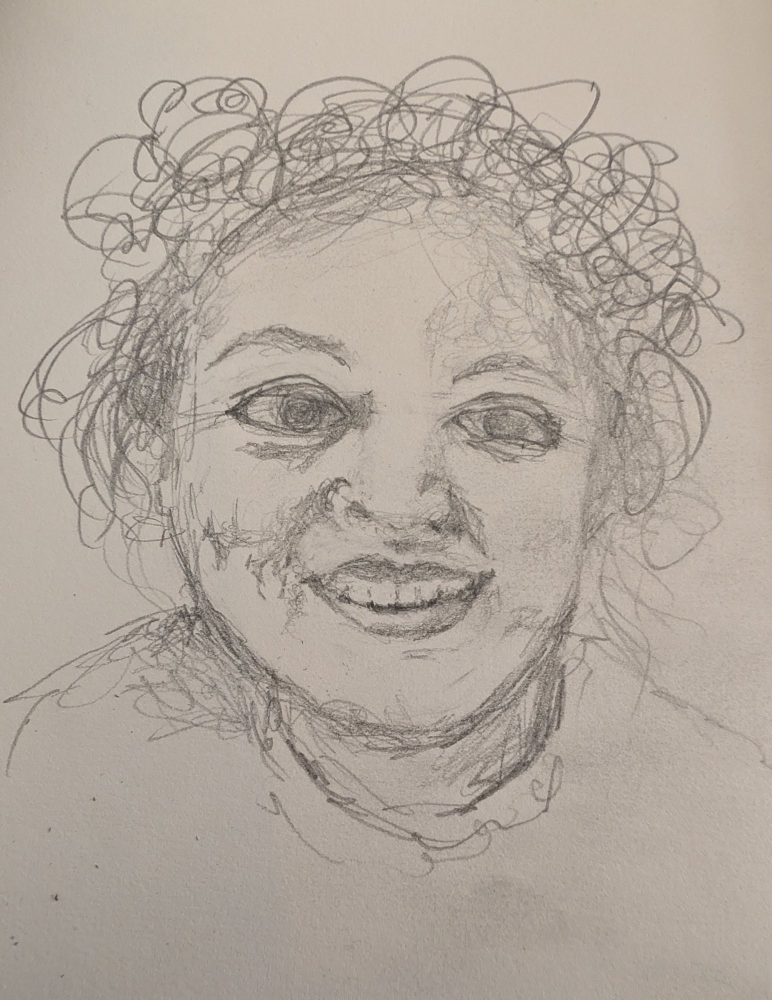
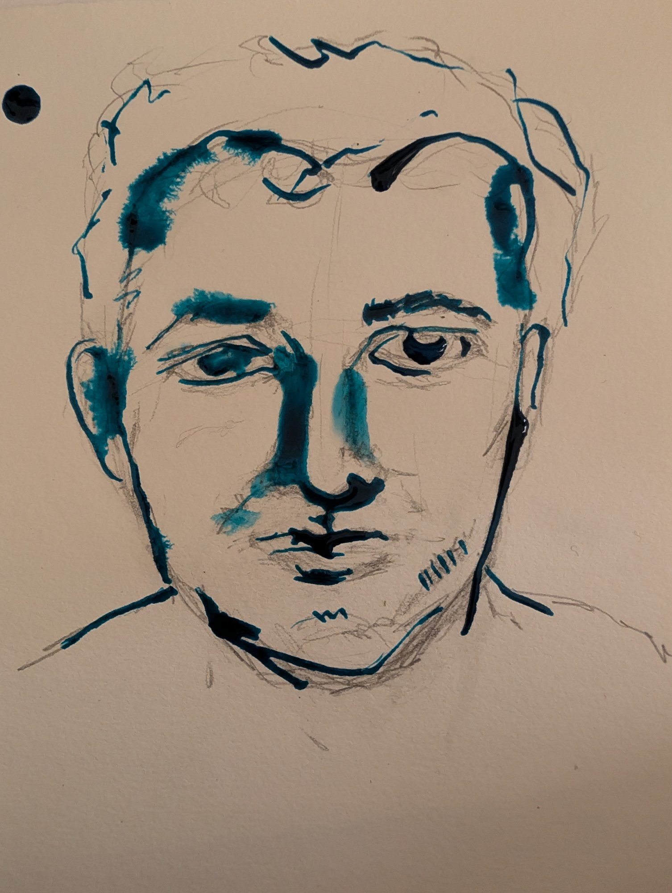
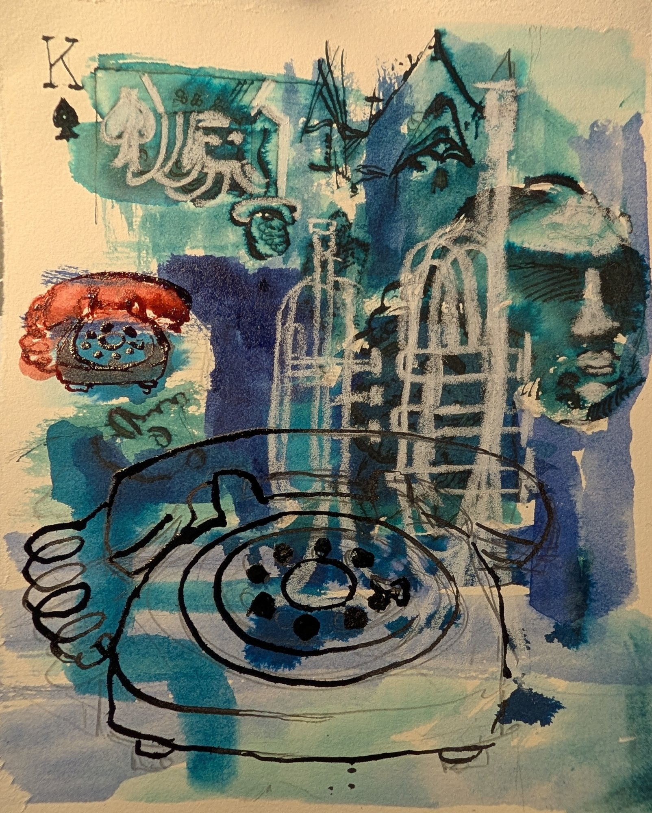

Louise’s parents had told her that he was a womanizer, and in fact it was true, although she could hardly believe it. There was always a new woman’s name to remember, confusion when going to a dinner party or one of his gigs – “is he still with…” they would say, or, “no, no, that was two wives ago.” There was Trina, who he had married so she could get a Green Card, and then Marianna, although their marriage had been so quick that they had forgotten what she looked like. There was the one with wildly curly hair that always seemed to be just a little wet, who they had met once or twice, at one show or another. She was jolly in a way that didn’t seem to make sense for Tim. When she smiled, her cheeks became pockets of dough, shaped by the lines left by old smiles. The next time they saw him, she had been replaced by the woman they all swore was a lesbian, although couldn’t say exactly why,
Louise couldn’t understand how he had managed to attract such an impressive array of women over the years (although she had to confess that not all of them were beautiful). She found him repulsive. Yes, he was a masterfully beautiful trumpet player, which, yes, she could admit was erotic in a sense, what with the mouthpiece and the fingering and all the blowing. But he was just so old looking, and beyond old. He was pathetic. His white hair, barely there, hanging on for dear life, stuck up in the middle of his head like a rooster’s crow, his (also white) beard dangling off his chin like – and Louise hated the vulgarity, it almost made her gag – pubic hair. She imagined that you would pull away from kissing him with these disgusting face pubes in your mouth and on your tongue. This was not to mention his stomach, which hung over his belt, when he wore one, and seemed to be an entity entirely separate from him, or his clothes, which were always as if he had pulled them from a stale pile on the floor. He was the kind of man whose shoelaces were always untied.
Louise liked getting very drunk at his gigs and whispering with her mother, which she knew was disrespectful to the performers, and felt very sorry for but never wanted to stop. The things they were saying were not even rude, but instead things like “this is the best thing I have ever seen in my life,” or “I think God himself is speaking through these musicians right now.” It amused the two of them to speak like debutants at a soiree, or judges of a beauty contest.
That night, Louise was very drunk indeed. Turning to her mother, she whispered, “I just don’t understand why all these women throw themselves at Tim,” and her mom nodded and held up a finger to say wait until the song is finished and we can properly talk.
So Louise waited. Tim was playing in a quartet she had never seen before. There was the piano player she knew and liked, but found a little insufferable off the stage, a drummer her father often raved about, and a bassist she thought more or less got the job done. The drummer was fascinating to watch, and Louise found herself captivated by him. I have never cared so much about a drummer in my life, she thought. He kept using his hands to hit different parts of the drumset. It looked like he was playing for the first time, discovering sounds out of thin air. She turned her attention back to Tim. The pianist was soloing, a choppy, haunting scattering of notes on the high end of the piano, and Tim held his trumpet loosely at his side. Louise squinted. It was dark in the bar. She and her mother had arrived late. They sat at a table off to the side where they couldn’t properly see. She closed her eyes and began undressing Tim’s face. Louise removed his beard and the saggy pouches around the corners of his mouth. She smoothed out his skin, added more hair to his widow’s peak, and trimmed his eyebrows. She kept the smile lines around his eyes, and for the first time, she understood how blue they were. There was still something very sad about him, she found, but it was less pathetic and more alluring. He was the kind of sad man that women wanted to sleep with, to make less sad.

Louise crossed her legs and felt her left knee pressing into her right upper calf. Later, between sets, when she would uncross her legs and stand up to order another drink at the bar, she would feel the redness on the back of her leg, hot and pulsing like a jellyfish sting. She had never been stung by a jellyfish before, but spent many long, hot days spread out on a towel at Rockaway Beach, rotating her body every so often to avoid an uneven tan. Louise liked swimming, watching the goosebumps pop up on her arms as she went deeper into the water, feeling the waves rolling over her when she floated on her back.
She wanted to be thought of as one of those girls who would drop her things in the sand and run immediately into the water, diving under the first big wave she saw. Everyone on the beach watched those girls, admired their fearlessness even against the biggest waves that crashed in unexpected places. But she hated getting her things sandy. She didn’t like going home to find sand in the crevices of her bag, in her wallet, even in the case where she kept her deck of cards. So she took the time to spread out her blanket first, setting her big canvas bag down only once the sand was covered, and using an upside down shoe on each opposite corner to keep the blanket from blowing away. Then, of course, Louise had to fold her clothes and stack them neatly in her bag, pulling out her book and her sunscreen and her hat and tucking her phone away underneath everything. And by that point, she would have started to think about the jellyfish that washed up on the shore in late August. They were so translucent in the mid-afternoon sun that they were almost invisible. With the jellyfish, Louise wouldn’t feel much like running into the water anymore, so she would tiptoe cautiously, watching every step she took carefully. So she wasn’t really the kind of girl who just tossed herself into the water seconds after arriving at the beach.
That’s what really bothered her about Tim, she thought. Nothing he did was careful, premeditated. She watched his body shifting back and forth in time with the music, his eyes closed, his eyebrows bunched together. He lifted his trumpet to his lips and blew air through the mouthpiece, opening the valve at the bottom to let his spit dribble out onto the floor. Louise moved with the understanding that someone could always look at her, assess her, admire her. And here was Tim, on stage, playing in a quartet named for him, and he was dressed like a complete slob, so taken by the music he forgot to arrange his face in a respectable way.